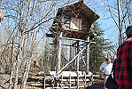
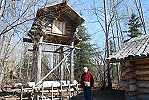
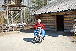
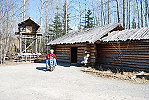
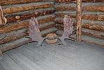
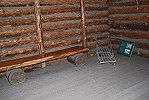
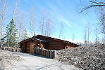
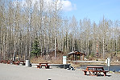
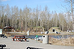

|

#Food cache. These were often placed a mile from the dwelling. |

Here you can see how high these food caches are. |

Obie and her mobility scooter near the food cache. |
|

The entire exhibit for one group. |

Moose horns. |

A small sled for a child. |
|

Another community lodge that we couldn't see because it was reserved for some group. |

Picnic tables are available, especially when it was warmer than when we were there. |

Another shot across the exhibit. |